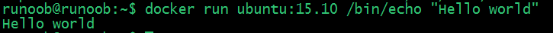
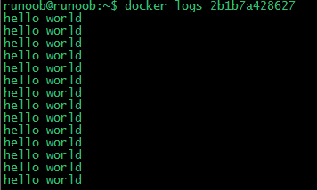
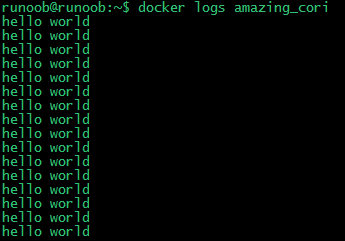
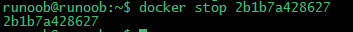

Docker Hello World
Docker allows you to run applications inside containers, usingdocker runcommand to run an application inside a container.
Output Hello world
example@example:~$ docker run ubuntu:15.10 /bin/echo "Hello world" Hello world

Analysis of each parameter:
-
docker:Docker's binary executable file.
-
run:Combined with the preceding docker to run a container.
-
ubuntu:15.10Specify the image to run. Docker first checks whether the image exists on the local host. If it does not exist, Docker will download the public image from the image repository Docker Hub.
-
/bin/echo "Hello world": The command to execute inside the started container
The complete meaning of the above command can be explained as: Docker creates a new container from the ubuntu15.10 image, then executes bin/echo "Hello world" inside the container, and then outputs the result.
Run an interactive container
We use Docker's two parameters -i -t to make the container run by Docker achieveconversationthe ability to:
example@example:~$ docker run -i -t ubuntu:15.10 /bin/bash root@0123ce188bd8:/#
Analysis of each parameter:
-
-t:Specify a pseudo-terminal or terminal in the new container.
-
-i:Allows you to interact with the standard input (STDIN) in the container.
Note the second lineroot@0123ce188bd8:/#At this point, we have entered a container with the ubuntu15.10 system.
We try to run commands in the container cat /proc/versionandlsTo view the version information of the current system and the file list of the current directory respectively.
root@0123ce188bd8:/# cat /proc/version Linux version 4.4.0-151-generic (buildd@lgw01-amd64-043) (gcc version 5.4.0 20160609 (Ubuntu 5.4.0-6ubuntu1~16.04.10) ) #178-Ubuntu SMP Tue Jun 11 08:30:22 UTC 2019 root@0123ce188bd8:/# ls bin boot dev etc home lib lib64 media mnt opt proc root run sbin srv sys tmp usr var root@0123ce188bd8:/#
We can exit the container by running the exit command or using CTRL+D.
root@0123ce188bd8:/# exit exit root@example:~#
Note in the third lineroot@example:~#Indicates that we have exited the current container and returned to the current host.
Start container (background mode)
Use the following command to create a container that runs as a process
example@example:~$ docker run -d ubuntu:15.10 /bin/sh -c "while true; do echo hello world; sleep 1; done" 2b1b7a428627c51ab8810d541d759f072b4fc75487eed05812646b8534a2fe63
In the output, we did not see the expected "hello world", but rather a long string of characters.
2b1b7a428627c51ab8810d541d759f072b4fc75487eed05812646b8534a2fe63
This long string is called the container ID, which is unique for each container. We can use the container ID to see what happened to the corresponding container.
First, we need to confirm that the container is running. This can be done bydocker psto view:
example@example:~$ docker ps CONTAINER ID IMAGE COMMAND ... 5917eac21c36 ubuntu:15.10 "/bin/sh -c 'while t…" ...
Output details introduction:
CONTAINER ID:Container ID.
IMAGE:The image used.
COMMAND:The command run when starting the container.
CREATED:The creation time of the container.
STATUS:Container status.
There are 7 states:
- created
- restarting
- running or Up (running)
- removing (migrating)
- paused
- exited
- dead
PORTS:The container's port information and the connection type used (tcp\udp).
NAMES:The automatically assigned container name.
On the host machine, usedocker logscommand to view the standard output inside the container:
example@example:~$ docker logs 2b1b7a428627

example@example:~$ docker logs amazing_cori

Stop containers
We usedocker stopcommand to stop the container:

Throughdocker psCheck, the container has stopped working:
example@example:~$ docker ps
You can see that the container is gone.
You can also use the following command to stop:
example@example:~$ docker stop amazing_coriother extensions